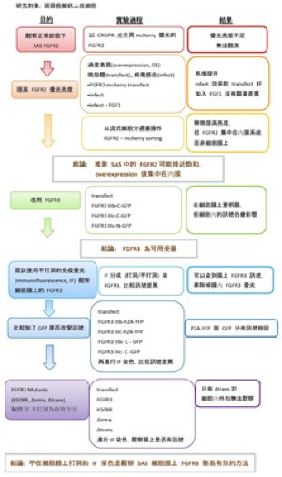

調控FGFR的活性與分布，以最佳化頭頸癌之標靶治療

作者
胡博翔
陳逸昇
指導老師
童禕珊 老師
指導教授
蔡丰喬 教授
作品摘要
本研究旨在探討 FGFR 活性、分布與功能間的關係，以明瞭用 FGFR 作為癌症治療標靶的可能性。
受體酪氨酸激酶（Receptor tyrosine kinase, RTK） 是癌症標靶治療的主要標的，然而，RTK 中極重要的 FGFR 卻仍未被廣泛使用，我們懷疑這是因為 FGFR 與其他 RTK 有不同的作用模式與分布方式。因此，我們以頭頸部鱗狀上皮細胞株 SAS 為平台，觀察 FGFR 在細胞膜上的分佈；並探討 FGFR 是否透過異型合子（heterodimer）模式，影響細胞內訊息傳遞與細胞功能。
透過不在細胞膜打洞的免疫螢光染色法，我們成功建立了可以有效觀察細胞膜上的 FGFR，且排除細胞內FGFR 訊號干擾的平台。我們進一步使用三種 FGFR3 mutants，發現 FGFR 在細胞膜上的分布比例受 functional domain 影響，以及 FGFR 可能會由外吐小體（exosome）分泌。未來我們將據此平台繼續探討 FGFR 應用於癌症標靶治療的終極目標。